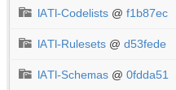
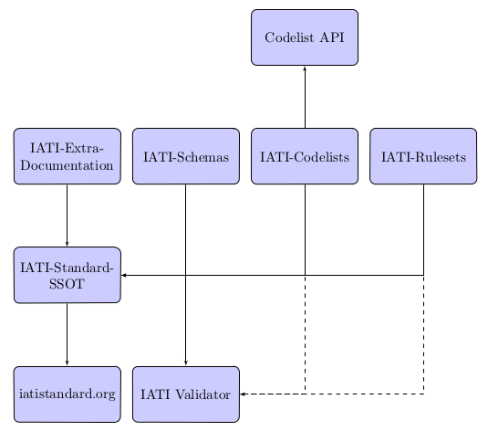

Proposal: A Single Source of Truth for the IATI Standard¶
This is a work in progress, and any suggested changes and improvements are welcome.
Contents
Introduction¶
Motivation¶
By having a Single Source of Truth (SSOT) for the IATI standard, we create one set (or sets) of documents that define the standard at any point in time.
This is a ‘backend’ system. Most people will not know, or need to know how it works, or of its existence. Most people will access the information held in the SSOT via other systems (websites, documents, applications, etc)
Those people that want to know, or are interested in it, may gain further knowledge of how it works and exploit that for their own use. (e.g. developers may go directly to the SSOT to fetch data for their applications)
We (IATI) should build our public facing services from the SSOT (eating our own dog food). This means we can tell a consistent story across platforms, and it allows us to know that it is working.
The SSOT will alter and change overtime. It is important therefore that we are able to track changes over time, and therefore see ‘snapshots’ of the IATI Standard. These will normally be linked with versions of the IATI Standard, but not always. (see Changes After Release).
Bundling up the standard¶
To create or use data published to a version of the IATI Standard, you need to know all about the SSOT that exists/existed for that version. For a single source of truth to work with the IATI Standard you will need to maintain a collection of documentation, guidance, XML schema, codelists, and enforcement rules that define the standard at any one time.
The least complicated way to achieve this is to ‘bundle’ versions of the standard, so that everything for one version can be found in one place.
About GitHub¶
At it’s core, GitHub is a hosted service for the git version control software. Everything on github is stored as flat files, but these can be in whatever format. Files are stored in ‘repositories’. Versioning on GitHub is at on a per repository basis (not per file). Different types of versions are tracked via commits, branches, and tags.
Pros and Cons GitHub to store our Single Source of Truth¶
Pros:
- Can store all the data in one place
- Very structured versioning information
- Makes it easy to pull a copy of the entire SSOT (all versions etc.), provided you have git knowledge
- Git (and github) allow distributed teams to collaborate easily
- Git workflows encourage independent changes that are then reviewed before publication.
- Documentation is not in ‘Word’.
- Changes can be viewed publicly as we are working on them - this may allow us to reduce the time between upgrades.
- It allows us to introduce non-functional changes between release cycles
- It is relatively easy for us to backup all of the information from github, in case something goes wrong
Cons:
- ‘Single source’ is split across multiple git repositories (however, we can use submodules to link these)
- GitHub, while widely known and used in developer circles is not necessarily something non-techies would be comfortable with. As this is a backend system this is not necessarily a large con.
- Editing documentation for example would have to be done on the web (on GitHub, via it’s interface) or editors would need to learn how to checkout documents locally, work on them and submit them for review
- Documentation is not in ‘Word’.
- A simple markup language would be used for creating human readable documents
- It is easy perhaps too easy make changes without thinking them through
- Reliance on GitHub (the “what if” they go down/sell out etc)
GitHub Architecture¶
Submodules¶

Git submodules are a way of including one git repository with another. On github they are indicated by the ‘folder within a folder’ icon. Submodules track a specific commit on the remote repository. On github, clicking on the name takes you to the general repository page, whereas clicking on the commit hash (f1b87ec etc.) takes you to the exact commit.
We use git submodules to include all the other SSOT repositories into a parent IATI-Standard-SSOT repository. Since submodules track specific commits, checking out an old version branch of the IATI-Standard-SSOT repository will also pull in the old versions of the other repositories.
Repositories¶
The IATI Standard is, in practice, a collection of schemas, rulesets, codelists and explanatory text/extra documentation. These are all brought together as submodules of the IATI-Standard-SSOT repository, as described above.
We chose to have separate repositories for each of these, in order to make it easier for a developer who only wanted to interact with one of the types of files, e.g. just codelists. Additionally a git repository already existed for the schemas.
The downside of our approach is that it is harder to track the development between repositories. GitHub issues are assoiated with the appropriate repositories. Whilst this provides a useful grouping, it an be difficult to see all issues at once. To help with this problem, we have a page on the dashboard which links to the issues for all milestones belonging to all repositories in the IATI organisation.
IATI-Standard-SSOT¶
https://github.com/IATI/IATI-Standard-SSOT has four submodules:
IATI-Extra-Documentation¶
This holds any extra text documentation (ie. what would have been on the wiki previously). This has been scraped (a one off process) from the wiki and converted to reStructuredText format, in order to work with the new documentation generation process.
Although reStructuredText is different from wiki markup in many ways, the main principle is the same - it is very human readable and writeable markup, that should be quite straightforward for non-programmers to write.
The documentation is structured such that each file is named after the xml element it describes, with subfolders for nested elements. This means that no extra mapping is needed to combine this documentation with the information from the schema.
IATI-Schemas¶
The schemas repository is unchanged from what it is previously.
IATI-Codelists¶
The codelists in https://github.com/IATI/IATI-Codelists were imported into the Single Source of Truth in version-1.04 of the IATI Standard. They were downloaded from their previous home at data.aidinfolabs.org, but then the structure of the XML files was updated to be more consistent, and to conform to a codelist schema.
Since then codelists have been given their own branch associated with the version of the IATI Standard to which they apply.
The codelist schema for each branch can be found at the root of the repository. e.g. for 2.01 https://github.com/IATI/IATI-Codelists/blob/version-2.01/codelist.xsd.
The structure of version 1.04 onwards codelist XML is not compatible with previous verisons. The XML structure used for version 2.01 is different to that used in version 1.x.
However, to maintian backwards compatibility within each integer version with tools that expect the old codelist structure there are various options for codelist users. See http://iatistandard.org/codelists/codelist-api/ for more information.
Since codelists are now versioned as part of the Single Source of Truth, they no longer contain @version and @date-last-modified attributes.
A machine readable mapping file at the root of each branch describes what elements and attributes use which codelists. For example the mapping file for 2.01 can be found at: https://github.com/IATI/IATI-Codelists/blob/version-2.01/mapping.xml
IATI-Rulesets¶
As of version 1.04 the rulesets were created afresh, in a new easy to parse JSON format and included in the Single Source of Truth.
Again rulesets are tied to versions of the IATI Standard, so we maintain them in their own branches.
Each branch has more information in its own README.rst
Python and PHP libraries have been added for testing against these rulesets - with the idea that it should be easy to write one for any other programming language. Look for testrules.py and testrules.php.
This is a drastic change from what we had prior to version 1.04, but is more appropriate since a) the previous machine rulesets weren’t official, and b) a json file containing xpath like this can be used in many programming languages (two examples above), unlike the constraints of the previous xquery rules.
There are various diferent rulesets for different purposes, see https://github.com/IATI/IATI-Rulesets#different-rulesets - the most important one for the standard is standard.json, which contains a constraints that are actually part of the standard. In 1.04 this is far from comprehensive. In version 2.01 of the IATI Standard the schema enforces many more rules directly.
There is currently no equivalent of the rulesets produced prior to version 1.04 of the IATI Standard (but there is a GitHub issue for this).
Generated Repositories¶
Note: this section represents a proposal that is not currently being implemented, due to its complexity. See `Machine Consumption`_ for our alternate approach.
Some of the SSOT repositories, could be used to generate extra text/data, which might also be useful to track in git repositories:
These could be generated automatically using github webhooks. They should be tagged and branched in the same way as the source repositories.
The advantages of using github repositories for this are:
- Allow people to download machine readable data in their preferred format e.g. get all the codelists in json format
- Allows people who are not familiar with our source formats (xml, reStructuredText) to easily view what the changes in the output (json, html) are
- Similarly allows us to more easily keep track of changes to documentation pages, without having to check all relevant source repositories
- Allows us to easily keep track of the generated text/data for different versions by using the same branches and tags as the source repositories
However, generated repositories are not currently being pursued due to the complexity of keeping mutliple branches properly in sync with the source repository. Generated data will still be availible, linked with specific source commits, see Machine Consumption for more information.
Branches¶
There is no master branch, since the IATI Update process means that a “general development” branch is not really appropriate. Instead there is a branch for each version of the standard - both those that have been released, and those that are in development. These are named version-<version number>, e.g. version-1.04 and version-2.01.
These branches should be consistent across all the SSOT.
Any changes that need review should be done on feature branches.
These branches should be created as soon as development work is being done on that version of the standard. (Previously branches called 1.03dev and 1.04dev were created, but this naming cheme is not being used any more).
There are also feature branches that are specific to individual repositories. These are for any changes that need reviewing/testing before they are merged into one of the main branches.
Tags¶
Tags starting with a v refer to a released version of the IATI Standard (e.g. v1.03 or v1.03.1). This tagging scheme is already used for the schemas. Tags should be consistent across all of the repositories, and the submodules should point at commits with the same tag. We would need to manage this as part of our internal workflow/policy.
There is currently no other planned uses for tags, although we could easily do so (e.g. to tag a snapshot on a particular date).
GitHub Issues¶
GitHub Issues are used for people to suggest changes to the IATI Standard. However, any changes that require change control (the full consultation process), must also be posted in the Zendesk forum http://support.iatistandard.org/forums/20020808-Modifications-Additions-Improvements
Issues are categorised using Milestones and Labels - only people with push access can add these. This means there is a task for one of us to add the appropriate labels and milestones for each issue that is added. There are advantages to this, since we know that every label and milestone has been determined by us.
It is also possible for us to edit the title of issues, to ensure that they are usefully descriptive for us.
Assignment¶
Issues can be assigned to a the person responsible for carrying out the next action on them. A list of all issues for the IATI organisation can be found at https://github.com/issues?user=IATI
Milestones¶
Issues can be grouped into Milestones which will be used to build the roadmap for the next release of the IATI Standard. Each github repository will have a milestone for each new version of the standard, consistently named. Only issues that we have decided to include in a given version of the standard should be tagged with that milestone.
Labels¶
Default github labels:
- wontfix - issues that have been closed, because we have rejected the suggested change
- bug - Small changes that we want to fix asap, outside of the normal release process (such as typos)
- enhancement - for improvements to the standard, rather than things that are currently ‘broken’
- duplicate - for duplicate issues - only one of the issues should be tagged with this, and closed
Issues in correct repository¶
Issues should be reported to the repository that is most relevant - e.g. codelists issues in the IATI-Codelists repository. If an issue is not in the most relevant place, we should move it.
GitHub does not allow for issues to moved automatically, but we will manually move any issues that have been reported in the the wrong repository. This would involving labelling as duplicate and closing the old issue, and adding a link to the newly open issue.
Changes After Release¶
There is regular pressure on the ‘standard’ to alter it between upgrade releases. Sometimes this is to do with simple documentation errors, codelist inaccuracies, or even a bug in the schema.
One way that we try to deal with this is to have regular release cycles, that way anything that ‘can’t be changed’ need only wait a few (6?) months to be fixed.
However, sometimes this means very minor changes get held up for no good reason. The GitHub approach outlined here may give us opportunities.
A functional change is one which changes whether a given IATI XML file is considered to validate against the standard. This includes validation against the schema, conformance to rulesets and conformance to functional codelists.
Note:
This distinction has actually been implemented in terms of Embedded and NonEmbbedded codelists.
https://github.com/IATI/IATI-Codelists#embedded-vs-nonembedded-codelists
After a minor (decimal) release, (e.g. 1.03) is tagged, there should be no further functional changes to that versions branch (e.g. version_1.03). However, we may want to make non-functional changes, such as correcting documentation and adding to non-functional codelists.
We could make those changes to the git branches and the website, and not make a new release, and tell people to check the github to see what has changed since release. Or, we could have patch releases for such changes (e.g. 1.03.1). Alternatively, we could do a mixture of both, depending on how small the change is, and whether we want to announce it to everyone (e.g. correcting a typo vs. drastically rewording documentation).
If used, patch releases would always be non-functional, so SHOULD NOT be listed in the @version attribute, in order to reduce the complexity for data complexity. We should have explicit guidance about what values the @version attribute should contain.
The current plan is to make changes to branches and the website, and not have patch releases.
Updating the SSOT¶
Since the SSOT is hosted on github, it can be updated by developers using git to pull/push from their local machine, or through github’s web interface for editing.
Editing through the web interface¶
Anyone on the IATI Tech team who wants to edit the SSOT should be granted push access to the GitHub Team, on the understanding that they do not edit directly edit on any of the main branches but create a feature branch for the change they are suggesting. A pull request can then be submitted to the relevant branch.
It is also possible (for IATI Tech team members and anyone else) to fork the SSOT and edit their own copy to incorporate the desired changes. A pull request can then be submitted back to the relevant repository within the SSOT. The details of including the changes can be discussed via GitHub’s pull request queue.
Suggested improvements through GitHub issue¶
Additionally, anyone can suggest changes by creating a GitHub issue in the relevant repository. See the GitHub Issues section for more.
Using the SSOT¶

Documentation generation¶
The documentation on http://iatistandard.org/ will be generated from the Single Source of Truth.
Text generated from the machine readable sources is combined with the extra documentation, which is then fed into Sphinx documentation tool. The scripts for doing this are in the IATI-Standard-SSOT repository, and the full technical instructions are in the README.rst. For example, for version 2.01: https://github.com/IATI/IATI-Standard-SSOT/blob/version-2.01/README.rst
This automated process for documentation generation makes it easy to generate the documentation in other formats, such as a single pages html file, or a pdf.
Machine Consumption¶
Moving forward, the preferred method of fetching machine readable information from the Single Source of truth will be via github.
The advantage of this is that, via branching, there will be a consistent way for people to query different versions of the standard, without any extra effort on our side.
The downsides of github are that it doesn’t look authoritative, and only contains data in its source formats (e.g. XML for codelists). The github repositories contain code for converting some of this data into other formats. One option is for people to download and convert this themself - but this may be tedious if they haven’t got the necessary software installed.
Therefore, converted and original versions of machine readable data will be availible in a folder of the iatistandard website. e.g. http://iatistandard.org/codelists/downloads/
Case Studies¶
The Validator¶
Currently the validator only validates against the schema. Eventually, the validator should be able to check files against all machine readable parts of the SSOT - currently this is codelists and rulesets in addition to the schema.
Plan¶
Much of the technical backend of the Single Source of Truth is set up now. The big next step is to work on the human processes of managing the git repositories properly etc.
Current versions of the standard¶
Due to some of the changes proposed, it is cumbersome to move old versions of the Standard into the Single Source of Truth. I propose continuing to maintain these separately, using our current archiving process with the wordpress.